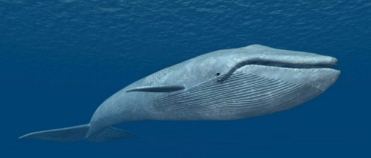
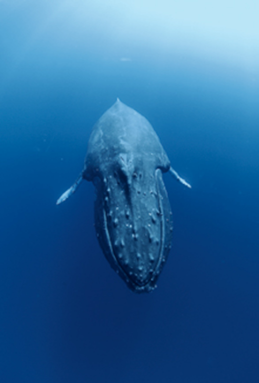

Balena albastra este un mamifer marin din subordinul balenelor cu fanoane. Cu o lungime de 30 m si cu o masa corporala de peste 170 tone, este cel mai mare animal cunoscut ca ar fi existat. Lung si zvelt, corpul balenei albastre poate avea tente diferite de gri-albastrui pe partea dorsala.
Pana la inceputul secolului al XX-lea, balenele albastre erau abundente in aproape
toate oceanele de pe Pamant. Vanatorii de balene le-au vanat timp de peste 100
de ani pana au ajuns aproape de disparitie, si au fost protejate de comunitatea
internationala in 1966. Un raport estima ca mai exista intre 5000 si 12000 de
balene albastre in toata lumea, aflate in cel putin 5 grupuri. Balena albastra are un
corp alungit, cu forma hidrodinamica, care pare mai alungit
fata de al altor cetacee. Capul este turtit, in forma de U, si are o creasta
proeminenta de la orificiile respiratorii pana la buza superioara. Partea din fata a gurii este acoperita cu fanoane, cca 300 de fanoane (fiecare de un metru lungime)
atarna de maxilar, patrunzant 0,5 m in interiorul gurii. Intre 70 si 118 de santuri (denumite pliuri ventrale) se intind de-a lungul gatului, paralel cu lungimea corpului. Aceste
pliuri ajuta la evacuarea apei din gura dupa hranire.
Balena cu cocoasa este un mamifer marin din familia balenelor brazdate, fiind unicul reprezentant actual al genului Megaptera (balene cu cocoasa).
Denumirea acestei specii provine fie de la inotatoarea dorsala care aminteste de un gheb, fie de la deprinderea animalului de a-si incovoia puternic spatele in timpul inotului. In mod obisnuit, balenele ies la vedere doar pentru scurt timp, cand despica licarirea oceanului ca sa respire.
Balenele-cu-cocoasa, desi mai active la suprafata decat cele mai multe specii, isi petrec totusi cam 90% din viata sub apa. Oare ce fac acolo, jos? Colinda pe distante prea mari, prin mari agitate si indepartate, pentru ca oamenii de stiinta sa le poata urmari; nu e de mirare ca obiceiurile balenelor, vietuitoarele cele mai mari de pe Pamant, inca sunt cufundate in mister. Dar in largul apelor albastre si calde, minunat de limpezi, ale Canalului 'Au'au cercetatorii aduna noi indicii despre o parte esentiala din viata balenelor: ritualurile de curtare si nasterea.
S-a descoperit ca unii dintre masculii scufundati intoneaza celebrul cantec al balenei-cu-cocoasa, umpland marile cu incantatii stranii, minunate. Unele femele ingrijesc noua generatie de pui, care acumuleaza zeci de kilograme pe zi si intr-un an isi dubleaza lungimea, datorita laptelui bogat al mamelor lor. Ceea ce nu a priceput nimeni pe deplin pana de curand a fost ca multe alte balene-cu-cocoasa din adancuri nu calatoresc, nu canta si nu alapteaza, ci pur si simplu stau suspendate cu capul in jos.
